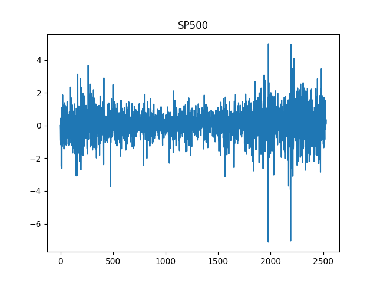
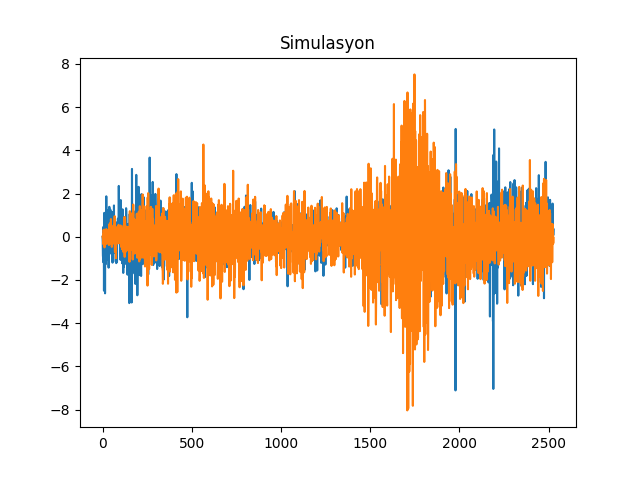

Kendisiyle Regresyon ve Yürüyen Ortalama (Autoregression, Moving Average)
Bir zaman serisi rasgele yürüyüşe (random walk) sahipse \(t\) anındaki değeri önceki rasgele hareketlerin birleşimiydi. Diğer alternatif bir serinin {} arada gürültü olmadan bağlantılı olmasıdır. Bu her iki yaklaşımı genelleştirerek ARIMA formunda gösterebiliriz. İlk önce AR formuna bakalım; Birinci seviyede kendisiyle regresyon (autoregression, first order) AR(1)'dır [1, sf. 23],
\[ y_t = c + \phi y_{t-1} + \epsilon_t \qquad (1) \]
Daha yüksek seviyeler AR(p) olarak gösterilir,
\[ y_t = c + \phi_1 y_{t-1} + \phi_2 y_{t-2} + ... + \phi_p y_{t-p} + \epsilon_t \]
Bu durumda \(t\) anındaki değer önceki \(t-1,..,t-p\) anındaki değerlerle (belli oranlar üzerinden tabii) artı gürültüye eşittir.
Bir diğer zaman serisi yürüyen ortalama (moving average) serisidir, bu tür seriler \(t\) anını önceki gürültülerin bir ortalaması olarak gösterir. Dikkat, önceki tüm gürültüleri olduğu gibi toplamıyoruz, belli sayıdaki önceki gürültüleri belli ağırlıklar üzerinden topluyoruz. Birinci seviyede bu seriler MA(1) olarak tanımlanır,
\[ y_t = \mu + \epsilon_t + \theta \epsilon_{t-1} \]
Daha yüksek seviyeleri MA(q) olarak tanımlarız,
\[ y_t = \mu + \epsilon_t + \theta_1 \epsilon_{t-1} + .. + \theta_q \epsilon_{t-q} \]
Pratikte pür birer AR(p) ya da MA(q) serisini tanımlamak zordur, çoğunlukla ikisinin bir karışımı olan ARMA(p,q) serileri test edilir (ya da daha genel olarak, ARIMA)(p,d,q). Ek I sembolü modele bir diferansiyel etkisi sağlıyor, bu eke göre eğer farkı alınmış seri bir ARMA modeli oluyorsa bu model ARIMA kabul ediliyor. Mesela ilk farklar \(d=1\) için \(y_t - y_{t-1}\) modeli ARMA ise, bu model ARIMA'dır [4, sf. 92].
Rasgele yürüyüş bu genel formda gösterilebilir, rasgele yürüyüş ARIMA(0,1,0) modelidir.
Daha odaklı bir örnek olarak Lynx verisine bakalım [2, sf. 727],
import pandas as pd
import statsmodels.api as sm
df = pd.read_csv('../tser_stoc/lynx.csv')df.x.plot()
plt.savefig('tser_ar_01.png')Çıplak gözle bakıldığında zaman serisinde 10 senelik kuvvetli bir periyot olduğunu görüyoruz. Acaba hangi ARIMA serisi, hangi \(p,q\) parametreleri üzerinden Lynx'i modelleyebilir? Bunun için önce bir kendisiyle korelasyon (autocorrelation) ACF ve kısmi kendisiyle korelasyon PACF analizi yapmak faydalı olabilir. PACF, aynen ACF gibi, seriyi bir ya da daha fazla geriye kaydırarak kendisiyle olan korelasyonunu inceler, ama bunu diğer tüm diğer kaydırılmış serilerin etkisini çıkartarak yapar, böylece gerideki belli bir \(t-n\) noktasının etkisi daha açık olarak görülebilir.
import statsmodels.api as sm
sm.graphics.tsa.plot_acf(df.x.values.squeeze(), lags=40)
plt.savefig('tser_ar_02.png')sm.graphics.tsa.plot_pacf(df.x, lags=40)
plt.savefig('tser_ar_03.png')ACF/PACF grafiklerinde mavi bölge dışına taşan noktalar istatistiki olarak önemli demektir. ACF'te 10 senelik periyot açık şekilde görülüyor. Hangi evre gecikmesi (lag) daha önemli? PACF grafiğinde 2. evrede güçlü bir negatif korelasyon görülüyor, 1 ve 8'de güçlü pozitif korelasyonlar var, ve 4'te yine negatif.
Şimdi belli ARIMA modellerini test edelim, modelleri birbiri ile kıyaslamak için AIC istatistiğini kullanacağız, daha düşük AIC daha iyi demektir. Ama ondan önce bir AR modelinin nasıl veriye uydurulduğunu düşünelim; (1)'deki formülde \(y_t\) ve \(y_{t-1}\) arasında lineer bir ilişki görüyoruz. Bu durumda bu iki veri noktasının bir lineer regresyona verirsek, \(\phi\) değeri bu regresyondan ortaya çıkacaktır. Regresyonun işlemesi için veri noktalarının bir aşağı kaydırırız, ve bu kaydırılmış değeri asıl değer ile regresyona sokarız,
import statsmodels.formula.api as smf
df['x_lag1'] = df.x.shift(1)
print (df[['x','x_lag1']].head(6), '\n')
results = smf.ols('x ~ x_lag1', data=df).fit()
print (results.params)
print ('aic', results.aic) x x_lag1
0 269 NaN
1 321 269.0
2 585 321.0
3 871 585.0
4 1475 871.0
5 2821 1475.0
Intercept 454.151675
x_lag1 0.719712
dtype: float64
aic 1907.7277269856995Şimdi bir ARIMA paketi ile aynısını yapalım,
from statsmodels.tsa.arima_model import ARIMA
model10 = ARIMA(df.x, order=(1,0,0))
model_fit = model10.fit(disp=0)
print(model_fit.summary()) ARMA Model Results
==============================================================================
Dep. Variable: x No. Observations: 114
Model: ARMA(1, 0) Log Likelihood -960.495
Method: css-mle S.D. of innovations 1100.247
Date: Tue, 13 Nov 2018 AIC 1926.991
Time: 11:45:20 BIC 1935.199
Sample: 0 HQIC 1930.322
==============================================================================
coef std err z P>|z| [0.025 0.975]
------------------------------------------------------------------------------
const 1550.1773 356.690 4.346 0.000 851.078 2249.276
ar.L1.x 0.7173 0.065 11.042 0.000 0.590 0.845
Roots
=============================================================================
Real Imaginary Modulus Frequency
-----------------------------------------------------------------------------
AR.1 1.3941 +0.0000j 1.3941 0.0000
-----------------------------------------------------------------------------Sonuçlar oldukça yakın (gerçi kesi farklı -niye?-, ama katsayı daha önemli).
En İyi Model?
AR, ARIMA, MA, onların dereceleri arasında bir seçim yapmak gerekiyor. Önce sırf AR deneyelim,
res = []
res.append(ARIMA(df.x, order=(1,0,0)).fit(disp=0))
res.append(ARIMA(df.x, order=(2,0,0)).fit(disp=0))
res.append(ARIMA(df.x, order=(3,0,0)).fit(disp=0))
res.append(ARIMA(df.x, order=(4,0,0)).fit(disp=0))
res.append(ARIMA(df.x, order=(5,0,0)).fit(disp=0))
res.append(ARIMA(df.x, order=(6,0,0)).fit(disp=0))
for x in res: print (x.df_model+1, x.aic)3 1926.9906490207566
4 1878.031850120836
5 1879.9567487161364
6 1874.221797648189
7 1875.2758635012437
8 1876.858328122954En iyi model AR(4) olarak gözüküyor. Şimdi sadece MA olarak bakalım,
lynx = df.x
%R -i lynx
%R model01<-arima(lynx,order=c(0,0,1))
%R model02<-arima(lynx,order=c(0,0,2))
%R model03<-arima(lynx,order=c(0,0,3))
%R model04<-arima(lynx,order=c(0,0,4))
%R model05<-arima(lynx,order=c(0,0,5))
%R model06<-arima(lynx,order=c(0,0,6))
%R -o res res <- AIC(model01,model02,model03,model04,model05,model06)
print res df AIC
model01 3 1917,947
model02 4 1890,061
model03 5 1887,770
model04 6 1888,279
model05 7 1885,698
model06 8 1885,230
Bu AIC'ler AR'dekilerden yüksek. Belki bir \(p,q\) kombinasyonu daha iyidir? En iyi p olan \(p=4\)'u tutalım, ve diğer \(q\)'leri test edelim,
lynx = df.x
%R -i lynx
%R model40<-arima(lynx,order=c(4,0,0))
%R model41<-arima(lynx,order=c(4,0,1))
%R model42<-arima(lynx,order=c(4,0,2))
%R model43<-arima(lynx,order=c(4,0,3))
%R -o res res<-AIC(model40,model41,model42,model43)
print res df AIC
model40 6 1874,222
model41 7 1875,351
model42 8 1862,435
model43 9 1880,432
Görülüyor ki hareketli ortalama ekine hiç gerek yok, çünkü en iyi AIC \(q=0\) için. Ya farklı diferansiyeller, yani ARIMA'nın I'si?
lynx = df.x
%R -i lynx
%R model400<-arima(lynx,order=c(4,0,0))
%R model401<-arima(lynx,order=c(4,1,0))
%R model402<-arima(lynx,order=c(4,2,0))
%R model403<-arima(lynx,order=c(4,3,0))
%R -o res res<-AIC(model400,model401,model402,model403)
print res df AIC
model400 6 1874,222
model401 5 1890,961
model402 5 1917,882
model403 5 1946,143
Diferansiyele de ihtiyaç yok, en iyi diferansiyel \(d=0\). En düşük AIC 1874.22, ve AR'ın gecikmeli evresi 4, ve hiçbir hareketli ortalama ve diferansiyle ihtiyaç yok. \(p=4\) deyince tabii ki \(t\) anının \(p-1,..,p-4\) ile alakası olması hali, yani \(t\) anı kendinden önceki 4 nokta ile ilişkide olacaktır. Bu ilişkiler gecikmeli sadece evre 2'deki kısmı korelasyonu değil, 4'teki kısmı korelasyonu da dikkate almak zorundadır yani.
Oynaklık (Volatility) ve GARCH Modelleri
ARCH İngilizce autoregressive conditional heteroskedasticity kelimelerinden geliyor, yani kendisiyle regresyonda olan koşullu değişen varyans serileri. GARCH ise genelleştirilmiş ARCH demektir. Şimdiye kadar gördük ki getiri \(r_t\)'ler (returns) tipik olarak \(N(0,\sigma^2)\)'den gelmektedir. Fakat finans zaman serilerinde çoğunlukla oynaklığın, matematiksel olarak varyansın zamana göre değişebildiği görülmektedir, varyans \(h_t\) belli noktalarda farklı olabilmektedir, hatta belli oynaklık blokları (volatility regions) olabilmektedir. Daha önce ARIMA'nın MA kısmında \(t\) anındaki gürültünün önceki zaman noktalarındaki gürültünün bir ortalaması olduğunu görmüştük, burada varyans da bir trend ve kaymaya (drift) sahip olabilmektedir.
ARCH(1) modeli
\[ y_t = \phi + e_t \]
\[ e_t \sim N(0,h_t) \]
\[ h_t = \alpha_0 + \alpha_1 e_{t-1}^2 \]
olarak gösterilir. \(\phi,\alpha_0,\alpha_1\) veriden hesaplanacaktır, ya da simulasyon durumunda dışarıdan belirlenecektir.
ARCH(q) modeli üstteki formül üzerinde basit bir uzatma yapar,
\[ h_t = \alpha_0 + \alpha_1 e_{t-1}^2 + ... + \alpha_1 e_{t-q}^2 \]
GARCH
Matematiksel olarak GARCH(p,q) \(p=1,q=1\) modeli, yani GARCH(1,1)
\[ h_t = \omega + \alpha_1 e_{t-1}^2 + \beta_1 h_{t-1}\]
GARCH(1,1) olduğu farzedilen bir finans serisinin parametrelerini bulmak için R tseries paketi kullanılabilir. Veri S&P 500 tüm 90'li yılların düzeltilmiş (adjusted) kapanış fiyatlarını içeriyor, getiri hesabı için \(\ln (P_t/P_{t-1})\) ya da \(\ln (P_t) - \ln(P_{t-1})\) yapıyoruz, ve bu getiriler üzerinde garch parametrelerini hesaplıyoruz.
import pandas as pd
dfsp500 = pd.read_csv('SP500.csv')
ret = np.log(dfsp500['Adj Close']).diff()*100.
ret = ret.fillna(0)from arch import arch_model
am = arch_model(ret)
res = am.fit(update_freq=5)
print (res.summary())Iteration: 5, Func. Count: 41, Neg. LLF: 3034.2183086575697
Iteration: 10, Func. Count: 76, Neg. LLF: 3032.126998485467
Iteration: 15, Func. Count: 107, Neg. LLF: 3032.061301642375
Optimization terminated successfully. (Exit mode 0)
Current function value: 3032.061301642018
Iterations: 15
Function evaluations: 107
Gradient evaluations: 15
Constant Mean - GARCH Model Results
==============================================================================
Dep. Variable: Adj Close R-squared: -0.000
Mean Model: Constant Mean Adj. R-squared: -0.000
Vol Model: GARCH Log-Likelihood: -3032.06
Distribution: Normal AIC: 6072.12
Method: Maximum Likelihood BIC: 6095.46
No. Observations: 2528
Date: Tue, Nov 13 2018 Df Residuals: 2524
Time: 12:31:10 Df Model: 4
Mean Model
============================================================================
coef std err t P>|t| 95.0% Conf. Int.
----------------------------------------------------------------------------
mu 0.0588 1.466e-02 4.014 5.975e-05 [3.010e-02,8.755e-02]
Volatility Model
=============================================================================
coef std err t P>|t| 95.0% Conf. Int.
-----------------------------------------------------------------------------
omega 5.4768e-03 3.144e-03 1.742 8.155e-02 [-6.861e-04,1.164e-02]
alpha[1] 0.0517 1.700e-02 3.041 2.356e-03 [1.838e-02,8.501e-02]
beta[1] 0.9421 1.858e-02 50.694 0.000 [ 0.906, 0.979]
=============================================================================
Covariance estimator: robustBu parametreler acaba doğru mu? Parametreler ile verinin kendisinin üretmeye uğraşalım. \(\phi=0\) kabul edersek, \(y_t = e_t\) olarak alabiliriz,
np.random.seed(1)
import pandas as pd
N = len(dfsp500)
alpha0=0.0048
alpha1=0.05
beta1 = 0.946773
y = np.zeros(N)
h = np.zeros(N)
w = np.random.standard_normal(N)
for i in range(1,N):
h[i] = alpha0 + alpha1 * (y[i-1]**2) + beta1 * h[i-1]
y[i] = w[i] * np.sqrt(h[i])Gerçek veriyi ve simulasyonu yan yana iki grafikte basalım,
dfsp500['SP500'] = ret
dfsp500['simulasyon'] = y
dfsp500['SP500'].plot()
plt.title('SP500')
plt.savefig('tser_ar_04.png')
dfsp500['simulasyon'].plot()
plt.title('Simulasyon')
plt.savefig('tser_ar_05.png') 
Bir serinin değişen varyansa sahip olup olmadığını anlamak için bir istatistiki test [3, sf. 355] Breusch-Pagan testi,
import numpy as np
import statsmodels.api as sm
import scipy as sp
def breusch_pagan_test(y,x):
results=sm.OLS(y,x).fit()
resid=results.resid
n=len(resid)
sigma2 = sum(resid**2)/n
f = resid**2/sigma2 - 1
results2=sm.OLS(f,x).fit()
fv=results2.fittedvalues
bp=0.5 * sum(fv**2)
df=results2.df_model
p_value=1-sp.stats.chi.cdf(bp,df)
return round(bp,6), df, round(p_value,7)Lynx verisi üzerinde uygulayalım,
import pandas as pd
import breusch
dflynx = pd.read_csv('../tser_stoc/lynx.csv');
print breusch.breusch_pagan_test(dflynx.x, range(len(dflynx)))(0.429236, 1.0, 0.6677515)En sondaki değer p-değeridir, 0.05'ten düşüklük varyansın sabit olduğu hipotezinin reddedildiği anlamına gelir, yani değişen varyans durumu vardır. Üstteki sonuçta tezi reddedemedik, demek ki Lynx verisinde varyans değişmiyor.
Basit Yürüyen Ortalama
Kabaca bir zaman serisini pürüzsüzleştirmenin (smoothing) en basit yolu basit bir yürüyen ortalama almaktır. Bir pencere büyüklüğü tanımlarız, bu pencereyi zaman serisinin üzerine koyarız, içine düşen tüm noktaların ortalamasını alırız, ve pencereyi bir yana kaydırarak işlemi tekrarlarız. Tüm zaman serisi için bu yapılınca elimize bir ortalama geçmiş olur,
Yani \(x_1,..,x_t\) zaman serisi için
\[ y_t = \frac{1}{k} \sum_{n=0}^{k-1} x_{t-n} = \frac{x_t + x_{t-1} + ... + x_{t-k+1}}{k} \]
Burada hiç ağırlık kullanmadık, yani pencere içinde veri noktalarının bazılarına daha fazla, bazılarına daha az ağırlık vermedik. Daha doğrusu ağırlık kullandık, ama tüm noktalara '1' ağırlığı verdik ve bu sebeple k tane '1' ağırlık verilmiş toplamı \(k\)'ye böldük. Fakat '1' yerine farklı ağırlıklar da verebilirdik, mesela \(w_1,w_2,..\) ki ağırlık toplamı 1 olacak şekilde,
\[ y_t = w_1x_t + w_2x_{t-1} + ... + w_kx_{t-k+1} \]
Ağırlıkların toplamı 1, fakat 1 ile bölmeyi göstermeye gerek yok.
Ya da \(0 < \alpha < 1\) olacak şekilde, tüm zaman serisini kullanarak (pencere yok), ağırlıkları \((1-\alpha)\)'nin katları olacak şekilde ayarlarsak,
\[ y_t = \frac{x_t + (1-\alpha)x_{t-1} + (1-\alpha)^2x_{t-2} + ... } {1 + (1-\alpha) + (1-\alpha)^2 + ...} \]
Üstteki hesaba üstel ağırlıklı yürüyen ortalama (exponentially weighted moving average -EWMA-) deniyor. Verinin tamamı kullanılır, ağırlıklar \(x_1\)'e kadar gider. 0 ile 1 arasındaki değerler, ve onların gittikçe artan üstelleri ile çarptığımız için yakın zamandaki verilerin ağırlığı fazladır, eskiye gittikçe hızlı bir şekile bu etki azalmaya başlar. Eğer \(1-\alpha=0.2\) ise mesela, önce \(0.2\), sonra \(0.2^2=0.04\), ardından \(0.2^3=0.008\), küçülmenin ne kadar hızlı olduğunu görüyoruz.
Ayrıca bölende olan ifadelerin başlangıcı 1 oranı \(1-\alpha\) olan bir geometrik seri olduğunu görelim, bkz [9], o zaman bölen \(\frac{1}{1-(1-\alpha)}\)'a yani \(\frac{1}{\alpha}\)'ya eşittir,
\[ y_t = \frac{x_t + (1-\alpha)x_{t-1} + (1-\alpha)^2x_{t-2} + ... } {\frac{1}{\alpha}} \]
\[ = [ x_t + (1-\alpha)x_{t-1} + (1-\alpha)^2x_{t-2} + ... ] \alpha \]
Üstteki hesabı özyineli yapmak ta mümkündür, türetmeye devam edersek,
\[ = \alpha x_t + [(1-\alpha)x_{t-1} + (1-\alpha)^2x_{t-2} + ... ]\alpha \]
\[ = \alpha x_t + (1-\alpha) [x_{t-1} + (1-\alpha)x_{t-2} + ... ]\alpha \]
\(\alpha\) ile çarpılan köşeli parantezdekiler \(y_{t-1}\)'in ta kendisi. O zaman özyineli ifade şu olur [8, sf. 502],
\[ y_t = \alpha x_t + (1-\alpha) y_{t-1}\]
Enflasyon
Fiyat seviyesinin (CPI) kendisiyle alakalı bir seri oldugu bilinir, bu mantıklı çünkü ekonomik psikolojisi açısından yüksek fiyat seviyesi daha yüksek fiyatlara gidişi tetikleyebilir. Alışverişte yüksek fiyatlar görüyorsam ben de kendi müşterimden daha yüksek fiyatlar istemeye başlayabilirim. Bu kendisiyle korelasyonu veride nasıl buluruz? Durbin-Watson testi var,
import pandas as pd
cpi = pd.read_csv('cpi.csv',index_col=0)import statsmodels.formula.api as smf
from statsmodels.stats.stattools import durbin_watson
inf = np.log(cpi)
results = smf.ols('CPIAUCNS ~ 1', data=inf).fit()
print (durbin_watson(results.resid))9.222098132626552e-05Düşük bir değer kendisiyle korelasyon varlığının işareti olabilir. Not: Bu istatistik normal regresyon paketleri tarafından çoğunlukla rapor edilir çünkü basit regresyonun önkabulü kendisiyle korelasyon olmadığıdır, bu sebeple DW korelasyon varlığına işaret ediyorsa analizci için bu önemli bir sinyal olmalı.
Durbin-Watson istatiği 0 ile 4 arasında bir değere sahiptir, 0 ile 2 arasındaki değerler pozitif kendisiyle korelasyonun, 2 ile 4 arası negatif kendisiyle korelasyonun işaretidir. Tam 2 değeri korelasyon yok demektir.
Bir diger test Ljung-Box testi,
import statsmodels.tsa.stattools as tsa
acf,ci,q,pvalues = tsa.acf(results.resid, nlags=4, alpha=95,qstat=True, unbiased=True)
print (acf)
print (pvalues)[1. 0.99585547 0.99164499 0.98737151 0.98305291]
[1.02286496e-121 5.63735022e-239 0.00000000e+000 0.00000000e+000]P-değerlerinin hepsinin 0.05'ten küçük olması kendisiyle korelasyon varlığı için bir işaret daha.
Kaynaklar
[1] Pfaff, Analysis of Integrated and Co-Integrated Time Series
[2] Crawley, The R Book
[3] Hilpisch, Python for Finance
[4] Shumway, Time Series Analysis with Applications in R
[5] Carter Hill, Principles of Econometrics
[6] Metcalfe , Introductory Times Series with R
[8] McKinney, Pandas Reference Documentation, 0.17.1
[9] Bayramlı, Diferansiyel Denklemler, Seriler